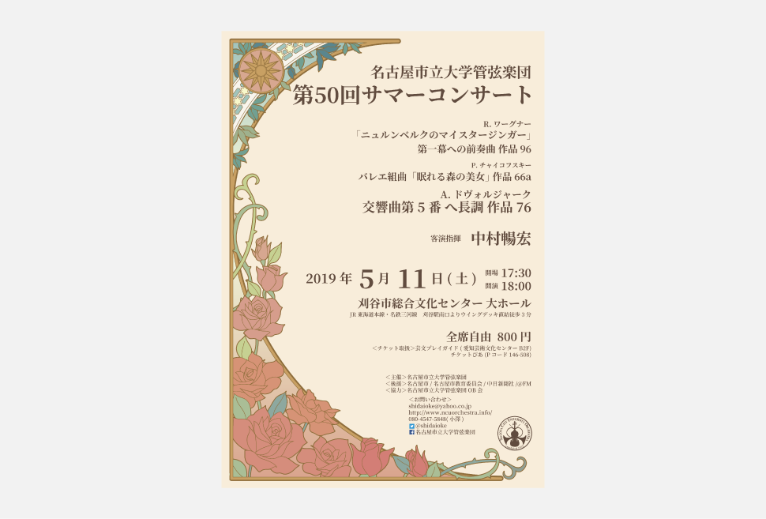
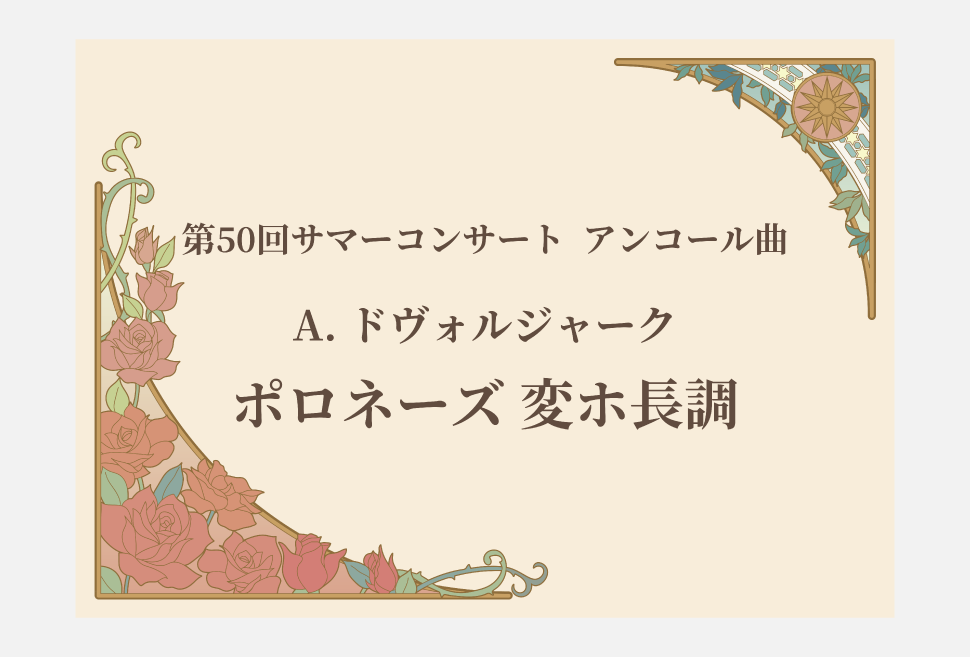
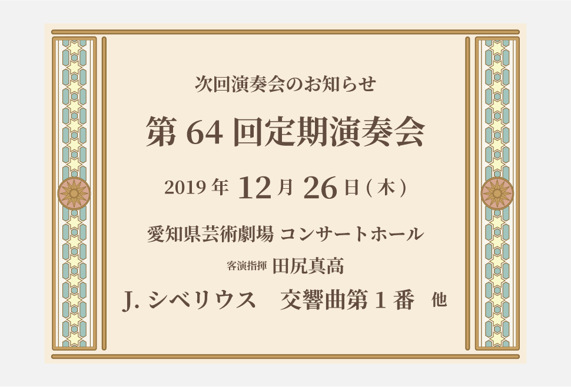

works


- 
- 
チラシ・ポスター等の印刷物
名古屋市立大学管弦楽団第50回サマーコンサート
制作期間
2019.1-2019.3
担当範囲
すべて（デザイン）
使用言語・ツール
Illustrator / Photoshop
制作背景
自分の所属する管弦楽団のサマーコンサートにおける印刷物のデザインをしました。
必要な情報を載せることやそれぞれのサイズ以外は特に決まりがないので演奏会のプログラムに合わせて自由に作ることができます。
今回デザインするにあたって、他の演奏会のチラシやポスターに埋もれないデザインを意識して作りました。
というのも、例えばチラシであればパンフレットに挟むのが主な使い道になるのですが、これは他の楽団も同じようにやっていることで受け取った側にとっては私たちのチラシは何十枚も挟まっているチラシのうちの１つでしかなく、他と同化してしまっては印象に残りづらいと感じていました。
そこで一般的な管弦楽団のチラシや同じパンフレットに挟まれるであろう近隣の大学のチラシを調査したところ、オーケストラの重厚感や高級感をイメージした黒、紺、青、臙脂、深緑など明度が低く濃い色のものが圧倒的に多かったので、そこを外した色を使うようにしました。
グラフィック面では今回の演奏会で演奏する曲はどの曲も5月の演奏会にふさわしい春らしいプログラムなので華やかな草花の溢れるイメージになるようにしていて、
メイン曲の作曲者であるドヴォルザークはチェコ出身の作曲家なので同じ時代に活躍したチェコの画家ミュシャの作品をイメージした線を用いて作りました。
チラシ・ポスターのデザインを元にパンフレットや次回演奏会・アンコール曲のポスターのデザインをし、統一感か出るようにしています。
また、普段チケットは横長のデザインにすることが多いですが、今回のデザインに合わせて縦長にし、半券になってもバランスよく見えるように意識しました。